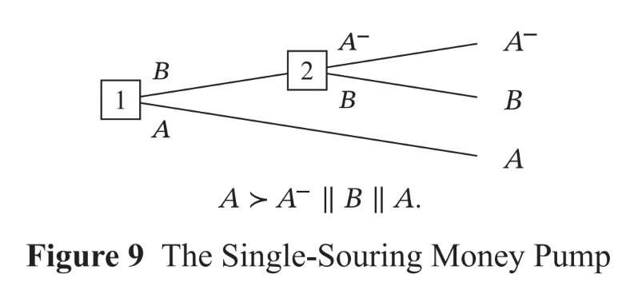
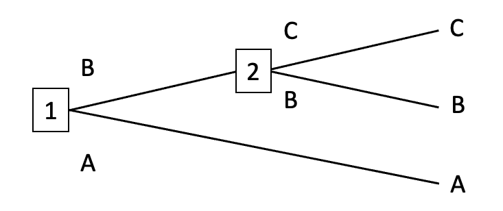

There Are No Coherence Theorems
1. Introduction
For about fifteen years, the AI safety community has been discussing coherence arguments. In papers and posts on the subject, it’s often written that there exist coherence theorems which state that, unless an agent can be represented as maximizing expected utility, that agent is liable to pursue strategies that are dominated by some other available strategy. Despite the prominence of these arguments, authors are often a little hazy about exactly which theorems qualify as coherence theorems. This is no accident. If the authors had tried to be precise, they would have discovered that there are no such theorems.
I’m concerned about this. Coherence arguments seem to be a moderately important part of the basic case for existential risk from AI. To spot the error in these arguments, we only have to look up what cited ‘coherence theorems’ actually say. And yet the error seems to have gone uncorrected for more than a decade.
More detail below.Thanks to Adam Bales, Dan Hendrycks, and members of the CAIS Philosophy Fellowship for comments on a draft of this post. When I emailed Adam to ask for comments, he replied with his own draft paper on coherence arguments. Adam’s paper takes a somewhat different view on money-pump arguments, and should be available soon.
2. Coherence arguments
Some authors frame coherence arguments in terms of ‘dominated strategies’. Others frame them in terms of ‘exploitation’, ‘money-pumping’, ‘Dutch Books’, ‘shooting oneself in the foot’, ‘Pareto-suboptimal behavior’, and ‘losing things that one values’ (see the Appendix for examples).
In the context of coherence arguments, each of these terms means roughly the same thing: a strategy \(A\) is dominated by a strategy \(B\) if and only if \(A\) is worse than \(B\) in some respect that the agent cares about and \(A\) is not better than \(B\) in any respect that the agent cares about. If the agent chooses \(A\) over \(B\), they have behaved Pareto-suboptimally, shot themselves in the foot, and lost something that they value. If the agent’s loss is someone else’s gain, then the agent has been exploited, money-pumped, or Dutch-booked. Since all these phrases point to the same sort of phenomenon, I’ll save words by talking mainly in terms of ‘dominated strategies’.
With that background, here’s a quick rendition of coherence arguments:
There exist coherence theorems which state that, unless an agent can be represented as maximizing expected utility, that agent is liable to pursue strategies that are dominated by some other available strategy.
Sufficiently-advanced artificial agents will not pursue dominated strategies.
So, sufficiently-advanced artificial agents will be ‘coherent’: they will be representable as maximizing expected utility.
Typically, authors go on to suggest that these expected-utility-maximizing agents are likely to behave in certain, potentially-dangerous ways. For example, such agents are likely to appear ‘goal-directed’ in some intuitive sense. They are likely to have certain instrumental goals, like acquiring power and resources. And they are likely to fight back against attempts to shut them down or modify their goals.
There are many ways to challenge the argument stated above, and many of those challenges have been made. There are also many ways to respond to those challenges, and many of those responses have been made too. The challenge that seems to remain yet unmade is that Premise 1 is false: there are no coherence theorems.
3. Cited ‘coherence theorems’ and what they actually say
Here’s a list of theorems that have been called ‘coherence theorems’. None of these theorems state that, unless an agent can be represented as maximizing expected utility, that agent is liable to pursue dominated strategies. Here’s what the theorems say:
3.1. The Von Neumann-Morgenstern Expected Utility Theorem:
The Von Neumann-Morgenstern Expected Utility Theorem is as follows:
An agent can be represented as maximizing expected utility if and only if their preferences satisfy the following four axioms:
Completeness: For all lotteries \(X\) and \(Y\), \(X\) is at least as preferred as \(Y\) or \(Y\) is at least as preferred as \(X\).
Transitivity: For all lotteries \(X\), \(Y\), and \(Z\), if \(X\) is at least as preferred as \(Y\), and \(Y\) is at least as preferred as \(Z\), then \(X\) is at least as preferred as \(Z\).
Independence: For all lotteries \(X\), \(Y\), and \(Z\), and all probabilities \(0 < p < 1\), if \(X\) is strictly preferred to \(Y\), then \(pX + (1 - p)Z\) is strictly preferred to \(pY + (1 - p)Z\).
Continuity: For all lotteries \(X\), \(Y\), and \(Z\), with \(X\) strictly preferred to \(Y\) and \(Y\) strictly preferred to \(Z\), there are probabilities \(p\) and \(q\) such that (i) \(0 < p < 1\), (ii) \(0 < q < 1\), and (iii) \(pX + (1 - p)Z\) is strictly preferred to \(Y\), and \(Y\) is strictly preferred to \(qX + (1 - q)Z\).
Note that this theorem makes no reference to dominated strategies, vulnerabilities, exploitation, or anything of that sort.
Some authors (both inside and outside the AI safety community) have tried to defend some or all of the axioms above using money-pump arguments. These are arguments with conclusions of the following form: ‘agents who fail to satisfy Axiom A can be induced to make a set of trades or bets that leave them worse-off in some respect that they care about and better-off in no respect, even when they know in advance all the trades and bets that they will be offered.’ Authors then use that conclusion to support a further claim. Outside the AI safety community, the claim is often:
Agents are rationally required to satisfy Axiom A.
But inside the AI safety community, the claim is:
Sufficiently-advanced artificial agents will satisfy Axiom A.
This difference will be important below. For now, the important thing to note is that the conclusions of money-pump arguments are not theorems. Theorems (like the VNM Theorem) can be proved without making any substantive assumptions. Money-pump arguments establish their conclusion only by making substantive assumptions: assumptions that might well be false. In the section titled ‘Money-pumps for Completeness’, I will discuss an assumption that is both crucial to money-pump arguments and likely false.
3.2. Savage’s Theorem
Savage’s Theorem is also a Von-Neumann-Morgenstern-style representation theorem. It also says that an agent can be represented as maximizing expected utility if and only if their preferences satisfy a certain set of axioms. The key difference between Savage’s Theorem and the VNM Theorem is that the VNM Theorem takes the agent’s probability function as given, whereas Savage constructs the agent’s probability function from their preferences over lotteries.
As with the VNM Theorem, Savage’s Theorem says nothing about dominated strategies or vulnerability to exploitation.
3.3. The Bolker-Jeffrey Theorem
This theorem is also a representation theorem, in the mould of the VNM Theorem and Savage’s Theorem above. It makes no reference to dominated strategies or anything of that sort.
3.4. Dutch Books
The Dutch Book Argument for Probabilism says:
An agent can be induced to accept a set of bets that guarantee a net loss if and only if that agent’s credences violate one or more of the probability axioms.
The Dutch Book Argument for Conditionalization says:
An agent can be induced to accept a set of bets that guarantee a net loss if and only if that agent updates their credences by some rule other than Conditionalization.
These arguments do refer to dominated strategies and vulnerability to exploitation. But they suggest only that an agent’s credences (that is, their degrees of belief) must meet certain conditions. Dutch Book Arguments place no constraints whatsoever on an agent’s preferences. And if an agent’s preferences fail to satisfy any of Completeness, Transitivity, Independence, and Continuity, that agent cannot be represented as maximizing expected utility (the VNM Theorem is an ‘if and only if’, not just an ‘if’).
3.5. Cox’s Theorem
Cox’s Theorem says that, if an agent’s degrees of belief satisfy a certain set of axioms, then their beliefs are isomorphic to probabilities.
This theorem makes no reference to dominated strategies, and it says nothing about an agent’s preferences.
3.6. The Complete Class Theorem
The Complete Class Theorem says that an agent’s policy of choosing actions conditional on observations is not strictly dominated by some other policy (such that the other policy does better in some set of circumstances and worse in no set of circumstances) if and only if the agent’s policy maximizes expected utility with respect to a probability distribution that assigns positive probability to each possible set of circumstances.
This theorem does refer to dominated strategies. However, the Complete Class Theorem starts off by assuming that the agent’s preferences over actions in sets of circumstances satisfy Completeness and Transitivity. If the agent’s preferences are not complete and transitive, the Complete Class Theorem does not apply. So, the Complete Class Theorem does not imply that agents must be representable as maximizing expected utility if they are to avoid pursuing dominated strategies.
3.7. Omohundro (2007), ‘The Nature of Self-Improving Artificial Intelligence’
This paper seems to be the original source of the claim that agents are vulnerable to exploitation unless they can be represented as expected-utility-maximizers. Omohundro purports to give us “the celebrated expected utility theorem of von Neumann and Morgenstern… derived from a lack of vulnerabilities rather than from given axioms.”
Omohundro’s first error is to ignore Completeness. That leads him to mistake acyclicity for transitivity, and to think that any transitive relation is a total order. Note that this error already sinks any hope of getting an expected-utility-maximizer out of Omohundro’s argument. Completeness (recall) is a necessary condition for being representable as an expected-utility-maximizer. If there’s no money-pump that compels Completeness, there’s no money-pump that compels expected-utility-maximization.
Omohundro’s second error is to ignore Continuity. His ‘Argument for choice with objective uncertainty’ is too quick to make much sense of. Omohundro says it’s a simpler variant of Green (1987). The problem is that Green assumes every axiom of the VNM Theorem except Independence. He says so at the bottom of page 789. And, even then, Green notes that his paper provides “only a qualified bolstering” of the argument for Independence.
4. Money-Pump Arguments by Johan Gustafsson
It’s worth noting that there has recently appeared a book which gives money-pump arguments for each of the axioms of the VNM Theorem. It’s by the philosopher Johan Gustafsson and you can read it here.
This does not mean that the posts and papers claiming the existence of coherence theorems are correct after all. Gustafsson’s book was published in 2022, long after most of the posts on coherence theorems. Gustafsson argues that the VNM axioms are requirements of rationality, whereas coherence arguments aim to establish that sufficiently-advanced artificial agents will satisfy the VNM axioms. More importantly (and as noted above) the conclusions of money-pump arguments are not theorems. Theorems (like the VNM Theorem) can be proved without making any substantive assumptions. Money-pump arguments establish their conclusion only by making substantive assumptions: assumptions that might well be false.
I will now explain how denying one such assumption allows us to resist Gustafsson’s money-pump arguments. I will then argue that there can be no compelling money-pump arguments for the conclusion that sufficiently-advanced artificial agents will satisfy the VNM axioms.
Before that, though, let’s get the lay of the land. Recall that Completeness is necessary for representability as an expected-utility-maximizer. If an agent’s preferences are incomplete, that agent cannot be represented as maximizing expected utility. Note also that Gustafsson’s money-pump arguments for the other axioms of the VNM Theorem depend on Completeness. As he writes in a footnote on page 3, his money-pump arguments for Transitivity, Independence, and Continuity all assume that the agent’s preferences are complete. That makes Completeness doubly important to the ‘money-pump arguments for expected-utility-maximization’ project. If an agent’s preferences are incomplete, then they can’t be represented as an expected-utility-maximizer, and they can’t be compelled by Gustafsson’s money-pump arguments to conform their preferences to the other axioms of the VNM Theorem. (Perhaps some earlier, less careful money-pump argument can compel conformity to the other VNM axioms without assuming Completeness, but I think it unlikely.)
So, Completeness is crucial. But one might well think that we don’t need a money-pump argument to establish it. I’ll now explain why this thought is incorrect, and then we’ll look at a money-pump.
5. Completeness doesn’t come for free
Here’s Completeness again:
Completeness: For all lotteries \(X\) and \(Y\), \(X\) is at least as preferred as \(Y\) or \(Y\) is at least as preferred as \(X\).
Since:
‘\(X\) is strictly preferred to \(Y\)’ is defined as ‘\(X\) is at least as preferred as \(Y\) and \(Y\) is not at least as preferred as \(X\).’
And:
‘The agent is indifferent between \(X\) and \(Y\)’ is defined as ‘\(X\) is at least as preferred as \(Y\) and \(Y\) is at least as preferred as \(X\).’
Completeness can be rephrased as:
Completeness (rephrased): For all lotteries \(X\) and \(Y\), either \(X\) is strictly preferred to \(Y\), or \(Y\) is strictly preferred to \(X\), or the agent is indifferent between \(X\) and \(Y\).
And then you might think that Completeness comes for free. After all, what other comparative, preference-style attitude can an agent have to \(X\) and \(Y\)?
This thought might seem especially appealing if you think of preferences as nothing more than dispositions to choose. Suppose that our agent is offered repeated choices between \(X\) and \(Y\). Then (the thought goes), in each of these situations, they have to choose something. If they reliably choose \(X\) over \(Y\), then they strictly prefer \(X\) to \(Y\). If they reliably choose \(Y\) over \(X\), then they strictly prefer \(Y\) to \(X\). If they flip a coin, or if they sometimes choose \(X\) and sometimes choose \(Y\), then they are indifferent between \(X\) and \(Y\).
Here’s the important point missing from this thought: there are two ways of failing to have a strict preference between \(X\) and \(Y\). Being indifferent between \(X\) and \(Y\) is one way: preferring \(X\) at least as much as \(Y\) and preferring \(Y\) at least as much as \(X\). Having a preferential gap between \(X\) and \(Y\) is another way: not preferring \(X\) at least as much as \(Y\) and not preferring \(Y\) at least as much as \(X\). If an agent has a preferential gap between any two lotteries, then their preferences violate Completeness.
The key contrast between indifference and preferential gaps is that indifference is sensitive to all sweetenings and sourings. Consider an example. \(C\) is a lottery that gives the agent a pot of ten dollar-bills for sure. \(D\) is a lottery that gives the agent a different pot of ten dollar-bills for sure. The agent does not strictly prefer \(C\) to \(D\) and does not strictly prefer \(D\) to \(C\). How do we determine whether the agent is indifferent between \(C\) and \(D\) or whether the agent has a preferential gap between \(C\) and \(D\)? We sweeten one of the lotteries: we make that lottery just a little but more attractive. In the example, we add an extra dollar-bill to pot \(C\), so that it contains $11 total. Call the resulting lottery \(C^{+}\). The agent will strictly prefer \(C^{+}\) to \(D\). We get the converse effect if we sour lottery \(C\), by removing a dollar-bill from the pot so that it contains $9 total. Call the resulting lottery \(C^{-}\). The agent will strictly prefer \(D\) to \(C^{-}\). And we also get strict preferences by sweetening and souring \(D\), to get \(D^{+}\) and \(D^{-}\) respectively. The agent will strictly prefer \(D^{+}\) to \(C\) and strictly prefer \(C\) to \(D^{-}\). Since the agent’s preference-relation between \(C\) and \(D\) is sensitive to all such sweetenings and sourings, the agent is indifferent between \(C\) and \(D\).
Preferential gaps, by contrast, are insensitive to some sweetenings and sourings. Consider another example. \(A\) is a lottery that gives the agent a Fabergé egg for sure. \(B\) is a lottery that returns to the agent their long-lost wedding album. The agent does not strictly prefer \(A\) to \(B\) and does not strictly prefer \(B\) to \(A\). How do we determine whether the agent is indifferent or whether they have a preferential gap? Again, we sweeten one of the lotteries. \(A^{+}\) is a lottery that gives the agent a Fabergé egg plus a dollar-bill for sure. In this case, the agent might not strictly prefer \(A^{+}\) to \(B\). That extra dollar-bill might not suffice to break the tie. If that is so, the agent has a preferential gap between \(A\) and \(B\). If the agent has a preferential gap, then slightly souring \(A\) to get \(A^{-}\) might also fail to break the tie, as might slightly sweetening and souring \(B\) to get \(B^{+}\) and \(B^{-}\) respectively.
The axiom of Completeness rules out preferential gaps, and so rules out insensitivity to some sweetenings and sourings. That is why Completeness does not come for free. We need some argument for thinking that agents will not have preferential gaps. ‘The agent has to choose something’ is a bad argument. Faced with a choice between two lotteries, the agent might choose arbitrarily, but that does not imply that the agent is indifferent between the two lotteries. The agent might instead have a preferential gap. It depends on whether the agent’s preference-relation is sensitive to all sweetenings and sourings.
A. money-pump for Completeness
So, we need some other argument for thinking that sufficiently-advanced artificial agents’ preferences over lotteries will be complete (and hence will be sensitive to all sweetenings and sourings). Let’s look at a money-pump. I will later explain how my responses to this money-pump also tell against other money-pump arguments for Completeness.
Here's the money-pump, suggested by Ruth Chang (1997, p.11) and later discussed by Gustafsson (2022, p.26):

‘\(\succ\)’ denotes strict preference and ‘\(||\)’ denotes a preferential gap, so the symbols underneath the decision tree say that the agent strictly prefers \(A\) to \(A^{-}\) and has a preferential gap between \(A^{-}\) and \(B\), and between \(B\) and \(A\).
Now suppose that the agent finds themselves at the beginning of this decision tree. Since the agent doesn’t strictly prefer \(A\) to \(B\), they might choose to go up at node 1. And since the agent doesn’t strictly prefer \(B\) to \(A^{-}\), they might choose to go up at node 2. But if the agent goes up at both nodes, they have pursued a dominated strategy: they have made a set of trades that left them with \(A^{-}\) when they could have had \(A\) (an outcome that they strictly prefer), even though they knew in advance all the trades that they would be offered.
Note, however, that this money-pump is non-forcing: at some step in the decision tree, the agent is not compelled by their preferences to pursue a dominated strategy. The agent would not be acting against their preferences if they chose to go down at node 1 or at node 2. And if they went down at either node, they would not pursue a dominated strategy.
To avoid even a chance of pursuing a dominated strategy, we need only suppose that the agent acts in accordance with the following policy: ‘if I go up at node 1, I will go down at node 2.’ Since the agent does not strictly prefer \(A^{-}\) to \(B\), acting in accordance with this policy does not require the agent to change or act against any of their preferences.
More generally, suppose that the agent acts in accordance with the following policy in all decision-situations: ‘if I previously turned down some option \(X\), I will not choose any option that I strictly disprefer to \(X\).’ That policy makes the agent immune to all possible money-pumps for Completeness.Gustafsson later offers a forcing money-pump argument for Completeness: a money-pump in which, at each step, the agent is compelled by their preferences to pursue a dominated strategy. But agents who act in accordance with the policy above are immune to this money-pump as well. Here’s why.Gustafsson claims that, in the original non-forcing money-pump, going up at node 2 cannot be irrational. That’s because the agent does not strictly disprefer \(A^{-}\) to \(B\): the only other option available at node 2. The fact that \(A\) was previously available cannot make choosing \(A^{-}\) irrational, because (Gustafsson claims) Decision-Tree Separability is true: “The rational status of the options at a choice node does not depend on other parts of the decision tree than those that can be reached from that node.” But (Gustafsson claims) the sequence of choices consisting of going up at nodes 1 and 2 is irrational, because it leaves the agent worse-off than they could have been. That implies that going up at node 1 must be irrational, given what Gustafsson calls ‘The Principle of Rational Decomposition’: any irrational sequence of choices must contain at least one irrational choice. Generalizing this argument, Gustafsson gets a general rational requirement to choose option \(A\) whenever your other option is to proceed to a choice node where your options are \(A^{-}\) and \(B\). And it’s this general rational requirement (‘Minimal Unidimensional Precaution’) that allows Gustafsson to construct his forcing money-pump. In this forcing money-pump, an agent’s incomplete preferences compel them to violate the Principle of Unexploitability: that principle which says getting money-pumped is irrational. The Principle of Preferential Invulnerability then implies that incomplete preferences are irrational, since it’s been shown that there exists a situation in which incomplete preferences force an agent to violate the Principle of Unexploitability.Note that Gustafsson aims to establish that agents are rationally required to have complete preferences, whereas coherence arguments aim to establish that sufficiently-advanced artificial agents will have complete preferences. These different conclusions require different premises. In place of Gustafsson’s Decision-Tree Separability, coherence arguments need an amended version that we can call ’Decision-Tree Separability*’: sufficiently-advanced artificial agents’ dispositions to choose options at a choice node will not depend on other parts of the decision tree than those that can be reached from that node. But this premise is easy to doubt. It’s false if any sufficiently-advanced artificial agent acts in accordance with the following policy: ‘if I previously turned down some option \(X\), I will not choose any option that I strictly disprefer to \(X\).’ And it’s easy to see why agents might act in accordance with that policy: it makes them immune to all possible money-pumps for Completeness, and (as I am about to prove back in the main text) it never requires them to change or act against any of their preferences.John Wentworth’s ‘Why subagents?’ suggests another policy for agents with incomplete preferences: trade only when offered an option that you strictly prefer to your current option. That policy makes agents immune to the single-souring money-pump. The downside of Wentworth’s proposal is that an agent following his policy will pursue a dominated strategy in single-sweetening money-pumps, in which the agent first has the opportunity to trade in \(A\) for \(B\) and then (conditional on making that trade) has the opportunity to trade in \(B\) for \(A^{+}\). Wentworth’s policy will leave the agent with \(A\) when they could have had \(A^{+}\). And (granted some assumptions), the policy never requires the agent to change or act against any of their preferences.
Here’s why. Assume:
That the agent’s strict preferences are transitive.
That the agent knows in advance what trades they will be offered.
That the agent is capable of backward induction: predicting what they would choose at later nodes and taking those predictions into account at earlier nodes.
(If the agent doesn’t know in advance what trades they will be offered or is incapable of backward induction, then their pursuit of a dominated strategy need not indicate any defect in their preferences. Their pursuit of a dominated strategy can instead be blamed on their lack of knowledge and/or reasoning ability.)

Given the agent’s knowledge of the decision tree and their grasp of backward induction, we can infer that, if the agent proceeds to node 2, then at least one of the possible outcomes of going to node 2 is not strictly dispreferred to any option available at node 1. Then, if the agent proceeds to node 2, they can act on a policy of not choosing any outcome that is strictly dispreferred to some option available at node 1. The agent’s acting on this policy will not require them to act against any of their preferences. For suppose that it did require them to act against some strict preference. Suppose that \(B\) is strictly dispreferred to \(A\), so that the agent’s policy requires them to choose \(C\), and yet \(C\) is strictly dispreferred to \(B\). Then, by the transitivity of strict preference, \(C\) is strictly dispreferred to \(A\). That means that both \(B\) and \(C\) are strictly dispreferred to \(A\), contrary to our original assumption that at least one of the possible outcomes of going to node 2 is not strictly dispreferred to any option available at node 1. We have reached a contradiction, and so we can reject the assumption that the agent’s policy will require them to act against their preferences. This proof is easy to generalize so that it applies to decision trees with more than three terminal outcomes.
Summarizing this section: Money-pump arguments for Completeness (understood as the claim that sufficiently-advanced artificial agents will have complete preferences) assume that such agents will not act in accordance with policies like ‘if I previously turned down some option \(X\), I will not choose any option that I strictly disprefer to \(X\).’ But that assumption is doubtful. Agents with incomplete preferences have good reasons to act in accordance with this kind of policy: (1) it never requires them to change or act against their preferences, and (2) it makes them immune to all possible money-pumps for Completeness.
So, the money-pump arguments for Completeness are unsuccessful: they don’t give us much reason to expect that sufficiently-advanced artificial agents will have complete preferences. Any agent with incomplete preferences cannot be represented as an expected-utility-maximizer. So, money-pump arguments don’t give us much reason to expect that sufficiently-advanced artificial agents will be representable as expected-utility-maximizers.
7. Conclusion
There are no coherence theorems. Authors in the AI safety community should stop suggesting that there are.
There are money-pump arguments, but the conclusions of these arguments are not theorems. The arguments depend on substantive and doubtful assumptions.
Here is one doubtful assumption: advanced artificial agents with incomplete preferences will not act in accordance with the following policy: ‘if I previously turned down some option \(X\), I will not choose any option that I strictly disprefer to \(X\).’ Any agent who acts in accordance with that policy is immune to all possible money-pumps for Completeness. And agents with incomplete preferences cannot be represented as expected-utility-maximizers.
In fact, the situation is worse than this. As Gustafsson notes, his money-pump arguments for the other three axioms of the VNM Theorem depend on Completeness. If Gustafsson’s money-pump arguments fail without Completeness, I suspect that earlier, less-careful money-pump arguments for the other axioms of the VNM Theorem fail too. If that’s right, and if Completeness is false, then none of Transitivity, Independence, and Continuity has been established by money-pump arguments either.
Bottom-lines:
There are no coherence theorems
Money-pump arguments don’t give us much reason to expect that advanced artificial agents will be representable as expected-utility-maximizers.
8. Appendix: Papers and posts in which the error occurs
Here’s a selection of papers and posts which claim that there are coherence theorems.
8.1. ‘The nature of self-improving artificial intelligence’
“The appendix shows how the rational economic structure arises in each of these situations. Most presentations of this theory follow an axiomatic approach and are complex and lengthy. The version presented in the appendix is based solely on avoiding vulnerabilities and tries to make clear the intuitive essence of the argument.”
“In each case we show that if an agent is to avoid vulnerabilities, its preferences must be representable by a utility function and its choices obtained by maximizing the expected utility.”
8.2. ‘The basic AI drives’
“The remarkable”expected utility” theorem of microeconomics says that it is always possible for a system to represent its preferences by the expectation of a utility function unless the system has “vulnerabilities” which cause it to lose resources without benefit.”
8.3. ’Coherent decisions imply consistent utilities’
“It turns out that this is just one instance of a large family of coherence theorems which all end up pointing at the same set of core properties. All roads lead to Rome, and all the roads say, "If you are not shooting yourself in the foot in sense X, we can view you as having coherence property Y."”
“Now, by the general idea behind coherence theorems, since we can't view this behavior as corresponding to expected utilities, we ought to be able to show that it corresponds to a dominated strategy somehow—derive some way in which this behavior corresponds to shooting off your own foot.”
“And that's at least a glimpse of why, if you're not using dominated strategies, the thing you do with relative utilities is multiply them by probabilities in a consistent way, and prefer the choice that leads to a greater expectation of the variable representing utility.”
“The demonstrations we've walked through here aren't the professional-grade coherence theorems as they appear in real math. Those have names like "Cox's Theorem" or "the complete class theorem"; their proofs are difficult; and they say things like "If seeing piece of information A followed by piece of information B leads you into the same epistemic state as seeing piece of information B followed by piece of information A, plus some other assumptions, I can show an isomorphism between those epistemic states and classical probabilities" or "Any decision rule for taking different actions depending on your observations either corresponds to Bayesian updating given some prior, or else is strictly dominated by some Bayesian strategy".”
“But hopefully you've seen enough concrete demonstrations to get a general idea of what's going on with the actual coherence theorems. We have multiple spotlights all shining on the same core mathematical structure, saying dozens of different variants on, "If you aren't running around in circles or stepping on your own feet or wantonly giving up things you say you want, we can see your behavior as corresponding to this shape. Conversely, if we can't see your behavior as corresponding to this shape, you must be visibly shooting yourself in the foot." Expected utility is the only structure that has this great big family of discovered theorems all saying that. It has a scattering of academic competitors, because academia is academia, but the competitors don't have anything like that mass of spotlights all pointing in the same direction.”
‘Things To Take Away From The Essay’
“So what are the primary coherence theorems, and how do they differ from VNM? Yudkowsky mentions the complete class theorem in the post, Savage's theorem comes up in the comments, and there are variations on these two and probably others as well. Roughly, the general claim these theorems make is that any system either (a) acts like an expected utility maximizer under some probabilistic model, or (b) throws away resources in a pareto-suboptimal manner. One thing to emphasize: these theorems generally do not assume any pre-existing probabilities (as VNM does); an agent's implied probabilities are instead derived. Yudkowsky's essay does a good job communicating these concepts, but doesn't emphasize that this is different from VNM.”
8.4. ‘Sufficiently optimized agents appear coherent’
“Summary: Violations of coherence constraints in probability theory and decision theory correspond to qualitatively destructive or dominated behaviors.”
“Again, we see a manifestation of a powerful family of theorems showing that agents which cannot be seen as corresponding to any coherent probabilities and consistent utility function will exhibit qualitatively destructive behavior, like paying someone a cent to throw a switch and then paying them another cent to throw it back.”
“There is a large literature on different sets of coherence constraints that all yield expected utility, starting with the Von Neumann-Morgenstern Theorem. No other decision formalism has comparable support from so many families of differently phrased coherence constraints.”
‘What do coherence arguments imply about the behavior of advanced AI?’
“Coherence arguments say that if an entity’s preferences do not adhere to the axioms of expected utility theory, then that entity is susceptible to losing things that it values.”
Disclaimer: “This is an initial page, in the process of review, which may not be comprehensive or represent the best available understanding.”
8.5. ‘Coherence theorems’
“In the context of decision theory, "coherence theorems" are theorems saying that an agent's beliefs or behavior must be viewable as consistent in way X, or else penalty Y happens.”
Disclaimer: “This page's quality has not been assessed.”
“Extremely incomplete list of some coherence theorems in decision theory
Wald’s complete class theorem
Von-Neumann-Morgenstern utility theorem
Cox’s Theorem
Dutch book arguments”
8.6. ‘Coherence arguments do not entail goal-directed behavior’
“One of the most pleasing things about probability and expected utility theory is that there are many coherence arguments that suggest that these are the”correct” ways to reason. If you deviate from what the theory prescribes, then you must be executing a dominated strategy. There must be some other strategy that never does any worse than your strategy, but does strictly better than your strategy with certainty in at least one situation. There’s a good explanation of these arguments here.”
“The VNM axioms are often justified on the basis that if you don't follow them, you can be Dutch-booked: you can be presented with a series of situations where you are guaranteed to lose utility relative to what you could have done. So on this view, we have "no Dutch booking" implies "VNM axioms" implies "AI risk".”
8.7. ‘Coherence arguments imply a force for goal-directed behavior.’
“’Coherence arguments’ mean that if you don’t maximize ‘expected utility’ (EU)—that is, if you don’t make every choice in accordance with what gets the highest average score, given consistent preferability scores that you assign to all outcomes—then you will make strictly worse choices by your own lights than if you followed some alternate EU-maximizing strategy (at least in some situations, though they may not arise). For instance, you’ll be vulnerable to ‘money-pumping’—being predictably parted from your money for nothing.3”
8.8. ‘AI Alignment: Why It’s Hard, and Where to Start’
“The overall message here is that there is a set of qualitative behaviors and as long you do not engage in these qualitatively destructive behaviors, you will be behaving as if you have a utility function.”
8.9. ’Money-pumping: the axiomatic approach’
“This post gets somewhat technical and mathematical, but the point can be summarised as:
- You are vulnerable to money pumps only to the extent to which you deviate from the von Neumann-Morgenstern axioms of expected utility.
In other words, using alternate decision theories is bad for your wealth.”
8.10. ‘Ngo and Yudkowsky on alignment difficulty’
“Except that to do the exercises at all, you need them to work within an expected utility framework. And then they just go, "Oh, well, I'll just build an agent that's good at optimizing things but doesn't use these explicit expected utilities that are the source of the problem!"
And then if I want them to believe the same things I do, for the same reasons I do, I would have to teach them why certain structures of cognition are the parts of the agent that are good at stuff and do the work, rather than them being this particular formal thing that they learned for manipulating meaningless numbers as opposed to real-world apples.
And I have tried to write that page once or twice (eg "coherent decisions imply consistent utilities") but it has not sufficed to teach them, because they did not even do as many homework problems as I did, let alone the greater number they'd have to do because this is in fact a place where I have a particular talent.”
“In this case the higher structure I'm talking about is Utility, and doing homework with coherence theorems leads you to appreciate that we only know about one higher structure for this class of problems that has a dozen mathematical spotlights pointing at it saying "look here", even though people have occasionally looked for alternatives.
And when I try to say this, people are like, "Well, I looked up a theorem, and it talked about being able to identify a unique utility function from an infinite number of choices, but if we don't have an infinite number of choices, we can't identify the utility function, so what relevance does this have" and this is a kind of mistake I don't remember even coming close to making so I do not know how to make people stop doing that and maybe I can't.”
“Rephrasing again: we have a wide variety of mathematical theorems all spotlighting, from different angles, the fact that a plan lacking in clumsiness, is possessing of coherence.”
8.11. ‘Ngo and Yudkowsky on AI capability gains’
“I think that to contain the concept of Utility as it exists in me, you would have to do homework exercises I don't know how to prescribe. Maybe one set of homework exercises like that would be showing you an agent, including a human, making some set of choices that allegedly couldn't obey expected utility, and having you figure out how to pump money from that agent (or present it with money that it would pass up).
Like, just actually doing that a few dozen times.
Maybe it's not helpful for me to say this? If you say it to Eliezer, he immediately goes, "Ah, yes, I could see how I would update that way after doing the homework, so I will save myself some time and effort and just make that update now without the homework", but this kind of jumping-ahead-to-the-destination is something that seems to me to be... dramatically missing from many non-Eliezers. They insist on learning things the hard way and then act all surprised when they do. Oh my gosh, who would have thought that an AI breakthrough would suddenly make AI seem less than 100 years away the way it seemed yesterday? Oh my gosh, who would have thought that alignment would be difficult?
Utility can be seen as the origin of Probability within minds, even though Probability obeys its own, simpler coherence constraints.”
8.12. ‘AGI will have learnt utility functions’
“The view that utility maximizers are inevitable is supported by a number of coherence theories developed early on in game theory which show that any agent without a consistent utility function is exploitable in some sense.”